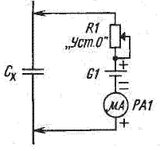
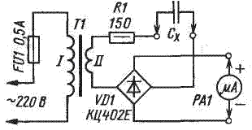
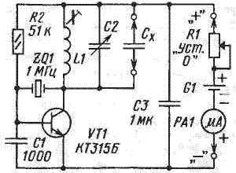
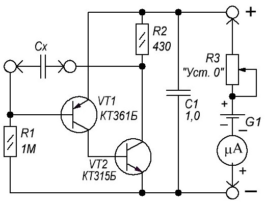

Простые измерители емкости
Многие современные и некоторые не очень современные мультиметры имеют функцию измерения емкости. Если же такого мультиметра нет, а есть только прибор, которым можно измерять сопротивление и ток, то несложные приспособления к нему позволят проверить работоспособность и узнать емкость неполярных и даже полярных конденсаторов емкостью от единиц или десятков пикофарад до сотен и тысяч микрофарад.
Вначале упомяну так называемый метод баллистического гальванометра, или, как его называют в просторечии, метод отскока стрелки. Под отскоком понимают кратковременное отклонение стрелки. Этот метод вовсе не требует дополнительных приспособлений и позволяет грубо оценить параметры конденсатора, сравнивая его с заведомо исправным. Для этого мультиметр включают на предел измерения сопротивления и щупами дотрагиваются до выводов предварительно разряженного конденсатора (рис. 1). Ток зарядки вызовет кратковременное отклонение стрелки, тем большее, чем больше емкость конденсатора. Пробитый конденсатор имеет сопротивление, близкое к нулевому, а конденсатор с оборванным выводом не вызовет никакого отклонения стрелки омметра.

Рис. 1
На пределе "Омы" удается проверять конденсаторы емкостью в тысячи микрофарад. При проверке оксидных конденсаторов надо соблюдать полярность, предварительно определив, на каком из выводов мультиметра присутствует плюсовое напряжение (полярность выводов мультиметра в режиме измерения сопротивлений может и не совпадать с полярностью в режиме измерения токов или напряжений). На пределе "кОм х 1" можно проверять конденсаторы емкостью в сотни микрофарад, на пределе "кОм х 10" — в десятки микрофарад, на пределе "кОм х 100" — в единицы микрофарад и, наконец, на пределе "кОм х 1000" или "МОм" — в доли микрофарады. Но конденсаторы емкостью в сотые доли микрофарады и менее дают слишком малое отклонение стрелки, поэтому судить об их параметpax становится трудно.
На рис. 2 приведена схема измерения емкости с помощью понижающего трансформатора и диодного моста. Так удается измерять емкости от тысячи пикофарад до единиц микрофарад. Отклонение стрелки прибора здесь стабильное, поэтому считывать показания легче. Ток в цепи миллиамперметра РА1 пропорционален напряжению вторичной обмотки трансформатора, частоте тока и емкости конденсатора. При частоте сети 50 Гц, а это наш бытовой стандарт, и вторичном напряжении трансформатора 16 В, ток через конденсатор емкостью 1000 пФ будет около 5 мкА, через 0,01 мкФ — 50 мкА, через 0,1 мкФ — 0,5 мА и через 1 мкФ — 5 мА. Калибровать или проверять показания также можно с помощью заведомо исправных конденсаторов известной емкости.

Рис. 2
Резистор R1 служит для ограничения тока до значения 0,1 А в случае короткого замыкания измерительной цепи. Большой погрешности в показания на указанных пределах измерений этот резистор не вносит. Трансформатор понижающий, лучше малогабаритный, подобный тем, что используют в маломощных блоках питания (сетевых адаптерах). На вторичной обмотке он должен обеспечивать переменное напряжение 12...20 В.
Измерить емкость конденсаторов от десятков до тысячи пикофарад позволит устройство, собранное по схеме на рис. 3. Фактически, это автогенератор с кварцевым резонатором. Схема возбуждения кварца выбрана иной, чем в прототипе. Сделано это по двум причинам: во-первых, чтобы уменьшить влияние паразитной проходной емкости транзистора между его базой и коллектором на работу генератора, во-вторых, чтобы ослабить вероятность возбуждения генератора на высших гармониках резонатора.

Рис. 3
Работает устройство следующим образом. Когда частота колебательного контура L1C2 в цепи коллектора транзистора VT1 оказывается близкой к частоте основного резонанса кварцевого резонатора ZQ1, возбудившийся генератор потребляет минимальный ток. Омметр, который питает устройство энергией, уменьшение тока будет воспринимать как увеличение измеряемого сопротивления. Таким образом, с помощью омметра удается контролировать процесс настройки контура в резонанс конденсатором переменной емкости (КПЕ) С2. Частота генератора определяется резонансной частотой кварцевого резонатора, а емкость и индуктивность колебательного контура при резонансе взаимосвязаны в соответствии с формулой Томсона [2]. Изменяя индуктивность катушки контура, необходимо добиться, чтобы резонанс наблюдался при емкости КПЕ, близкой к максимальной. Контролируемые конденсаторы подключают параллельно КПЕ, при этом резонанс будет наблюдаться при другом положении ротора КПЕ. Его емкость уменьшится на величину искомой.
КПЕ надо оснастить шкалой, проградуированной в пикофарадах с помощью точных, заведомо исправных конденсаторов. В устройстве можно применить любой маломощный транзистор, способный генерировать на частоте кварцевого резонатора. При использовании р-n-р транзистора полярность питания меняют на противоположную. Конденсатор С1 следует подобрать максимально большой емкости, при которой еще возникает генерация на основной частоте кварцевого резонатора. В этом случае уменьшится вероятность того, чтс кварц будет возбуждаться на высших гармониках. КПЕ лучше использовать трехсекционный, с воздушным диэлектриком, от старых ламповых приемников. Емкость одной секции такого конденсатора изменяется примерно от 12 до 490 пФ. Если все три секции соединить параллельно, то с учетом паразитных емкостей получим КПЕ, изменяющий емкость примерно от 50 до 1500 пФ. Можно применить и двухсекционный конденсатор, соединив его секции параллельно. Максимальная емкость такого конденсатора составит около 1000 пФ. В качестве катушки индуктивности L1 использован дроссель ДПМ-2,4 индуктивностью 20 мкГн. Катушку можно изготовить и самостоятельно. Индуктивность однослойной цилиндрической катушки без магнитопровода определяют по следующей эмпирической формуле:
L = DN2/(1000Nh/D+440), [мкГн]
где
D — диаметр катушки [мм];
N — число витков;
h — шаг намотки [мм], а при намотке виток к витку это просто диаметр провода.
Желательно выбрать предел, на котором омметр развивает ток короткого замыкания порядка 1 ...2 мА, и определить полярность выходного напряжения. При неправильной полярности подключения омметра устройство не заработает, хотя и не выйдет из строя. Измерить напряжение холостого хода, ток короткого замыкания омметра и определить его полярность на различных пределах измерения сопротивления можно с помощью другого прибора. С помощью описанной приставки можно измерять индуктивность катушек в пределах приблизительно 17...500 мкГн. Это при использовании кварцевого резонатора на частоту 1 МГц и КПЕ емкостью 50...1500пФ. Катушку для этого устройства делают сменной и калибруют прибор, используя эталонные индуктивности. Можно также использовать приставку как кварцевый калибратор.
Вместо устройства по схеме рис. 3 можно предложить менее громоздкое, в том отношении, что не потребуются КПЕ, кварц и катушка. Его схема показана на рис. 4. Она представляет собой двухкаскадный УПТ на транзисторах VT1 и VT2 разной структуры и непосредственной связью между каскадами. Измеряемый конденсатор Сх включают в цепь положительной обратной связи с выхода на вход УПТ. При этом возникает релаксационная генерация и транзисторы часть времени остаются закрытыми. Этот промежуток времени пропорционален емкости конденсатора.

Рис. 4
Пульсации выходного тока фильтрует блокировочный конденсатор С1. Усредненный ток, потребляемый устройством, при увеличении емкости конденсатора Сх становится меньше, и омметр воспринимает это как увеличение сопротивления. Устройство уже начинает реагировать на конденсатор емкостью 10 пФ, а при емкости 0,01 мкФ его сопротивление становится большим (сотни килоом). Если сопротивление резистора R1 уменьшить до 100 кОм, то интервал измеряемых емкостей составит 100 пФ...0,1 мкФ. Начальное сопротивление устройства — около 0,8 кОм. Здесь следует отметить, что оно нелинейное и зависит от протекающего тока. Поэтому на разных пределах измерения и с разными приборами показания будут различаться, и для проведения измерений необходимо сравнивать искомые показания с показаниями, даваемыми образцовыми конденсаторами.
Источники
radiomexanik.spb.ru - Простые измерители емкости
Пилтакян А. Простейшие измерители L и С: Сб.: "В помощь радиолюбителю", вып. 58, с.61—65. — М.: ДОСААФ, 1977.
Поляков В. Теория: Понемногу — обо всем. Расчет колебательных контуров. — Радио, 2000, № 7, с. 55, 56.
Поляков В. Радиоприемник с питанием от... мультиметра. — Радио, 2004, № 8, с. 58.
С. Коваленко, г. Кстово Нижегородской обл. Радио 07-05.